import torch
import numpy as np
import matplotlib.pyplot as plt
import pandas as pd
%matplotlib inline
# Retina display
%config InlineBackend.figure_format = 'retina'Error Code Dilbert
!wget https://upload.wikimedia.org/wikipedia/en/f/f3/Dilbert-20050910.png--2023-06-08 09:33:06-- https://upload.wikimedia.org/wikipedia/en/f/f3/Dilbert-20050910.png
Resolving upload.wikimedia.org (upload.wikimedia.org)... 103.102.166.240, 2001:df2:e500:ed1a::2:b
Connecting to upload.wikimedia.org (upload.wikimedia.org)|103.102.166.240|:443... connected.
HTTP request sent, awaiting response... 200 OK
Length: 10713 (10K) [image/png]
Saving to: ‘Dilbert-20050910.png’
Dilbert-20050910.pn 100%[===================>] 10.46K --.-KB/s in 0s
2023-06-08 09:33:06 (212 MB/s) - ‘Dilbert-20050910.png’ saved [10713/10713]
# Read Dilbert image as black and white
dilbert = plt.imread('Dilbert-20050910.png')[:,:,0]# Plot Dilbert without axis
plt.imshow(dilbert, cmap='gray')
plt.axis('off')(-0.5, 196.5, 184.5, -0.5)# Binarize Dilbert
dilbert = (dilbert > 0.5).astype(int)
# Plot Dilbert without axis
plt.imshow(dilbert, cmap='gray')
plt.axis('off')(-0.5, 196.5, 184.5, -0.5)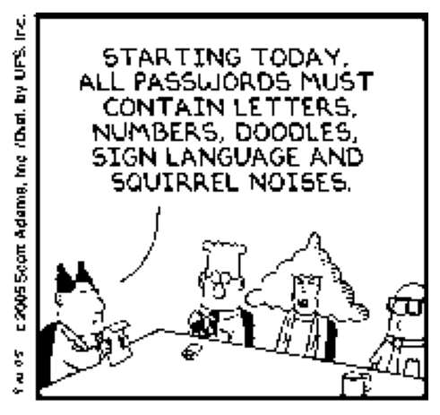
# Function to flip a bit from 0 to 1 or 1 to 0 with a probability f
def flip_bit(x, f):
if np.random.rand() < f:
return 1 - x
else:
return x
# Function to generate a noisy image
def noisy_image(image, f):
return np.array([[flip_bit(x, f) for x in row] for row in image])noisy_image1 = noisy_image(dilbert, 0.1)
noisy_image2 = noisy_image(dilbert, 0.2)
# Plot noisy images
plt.figure(figsize=(10, 5))
plt.subplot(1, 3, 1)
plt.imshow(dilbert, cmap='gray')
plt.axis('off')
plt.title('Original')
plt.subplot(1, 3, 2)
plt.imshow(noisy_image1, cmap='gray')
plt.axis('off')
plt.title('Noisy 1')
plt.subplot(1, 3, 3)
plt.imshow(noisy_image2, cmap='gray')
plt.axis('off')
plt.title('Noisy 2')Text(0.5, 1.0, 'Noisy 2')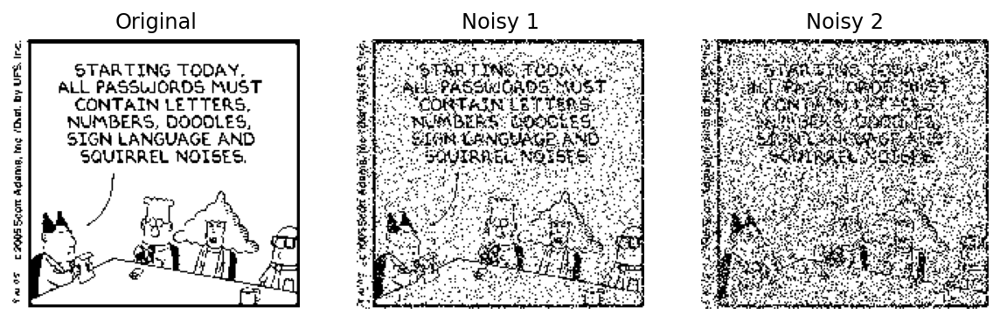
# Function to generate N noisy images
def generate_noisy_images(image, f, N):
return np.array([noisy_image(image, f) for i in range(N)])
# Function to plot original and N noisy images
def plot_noisy_images(image, noisy_images):
N = len(noisy_images)
plt.figure(figsize=(10, 5))
plt.subplot(1, N+1, 1)
plt.imshow(image, cmap='gray')
plt.axis('off')
plt.title('Original')
for i in range(N):
plt.subplot(1, N+1, i+2)
plt.imshow(noisy_images[i], cmap='gray')
plt.axis('off')
plt.title('Noisy {}'.format(i+1))noisy_images = generate_noisy_images(dilbert, 0.1, 3)
plot_noisy_images(dilbert, noisy_images)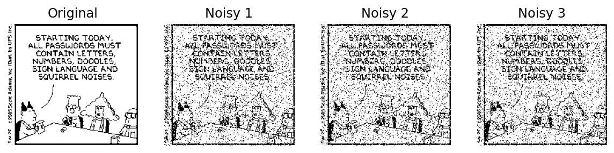
# Build the decoder which does a majority vote across the N noisy images
# Each image contains only 0s and 1s, so the majority vote is argmax
# Average across the N noisy images
def average_noisy_images(noisy_images):
return np.mean(noisy_images, axis=0)
# plot the average noisy image
average_noisy_image = average_noisy_images(noisy_images)
plot_noisy_images(dilbert, [average_noisy_image])

dilbertarray([[1, 1, 1, ..., 0, 0, 0],
[1, 1, 1, ..., 0, 0, 0],
[1, 1, 1, ..., 0, 0, 0],
...,
[1, 1, 1, ..., 0, 0, 0],
[1, 1, 1, ..., 0, 0, 0],
[1, 1, 1, ..., 1, 1, 1]])decoded_image = (average_noisy_image > 0.5).astype(int)
decoded_imagearray([[1, 1, 1, ..., 0, 0, 0],
[1, 1, 1, ..., 0, 0, 0],
[1, 1, 1, ..., 0, 0, 0],
...,
[1, 1, 1, ..., 0, 0, 0],
[1, 1, 1, ..., 0, 0, 0],
[1, 1, 1, ..., 1, 1, 1]])# Plot the decoded image
plt.imshow(decoded_image, cmap='gray')
plt.axis('off')(-0.5, 196.5, 184.5, -0.5)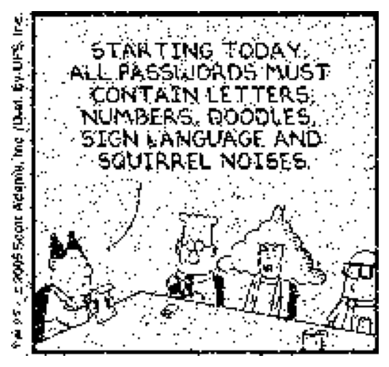
# Error between original and decoded image
def error(image, decoded_image):
return np.sum(image != decoded_image) / image.size
# Error between original and noisy images
def error_noisy_images(image, noisy_images):
return np.array([error(image, noisy_image) for noisy_image in noisy_images])
# Error between each N noisy images and the original
def error_noisy_images(image, noisy_images):
return np.array([error(image, noisy_image) for noisy_image in noisy_images])
# Plot the error between each noisy image and the original
error_noisy_images(dilbert, noisy_images)array([0.10155028, 0.10166004, 0.100782 ])# Error between decoded image and original
error(dilbert, decoded_image)0.028700782000274386# Function to generate noisy images and decode them and compute the error for a given f and N
# Plot the noisy images and the decoded image.
# Return the error between the original and decoded image
# Title the plot with the error
def error_f_N(f, N):
noisy_images = generate_noisy_images(dilbert, f, N)
decoded_image = ( average_noisy_images(noisy_images) > 0.5 ).astype(int)
err = error(dilbert, decoded_image)
# Plot all noisy images in first figure and the second figure just shows original and the decoded image
plt.figure(figsize=(10, 5))
plt.subplot(1, N+1, 1)
plt.imshow(dilbert, cmap='gray')
plt.axis('off')
plt.title('Original')
for i in range(N):
plt.subplot(1, N+1, i+2)
plt.imshow(noisy_images[i], cmap='gray')
plt.axis('off')
# If N > 8 then the title is too long and the plot is not readable so we do not show the title
if N <= 8:
plt.title('Noisy {}'.format(i+1))
plt.figure(figsize=(10, 5))
plt.subplot(1, 2, 1)
plt.imshow(dilbert, cmap='gray')
plt.axis('off')
plt.title('Original')
plt.subplot(1, 2, 2)
plt.imshow(decoded_image, cmap='gray')
plt.title('Decoded (Error: {:.4f})'.format(err))
plt.axis('off')
return errerror_f_N(0.1, 3)0.026807518178076552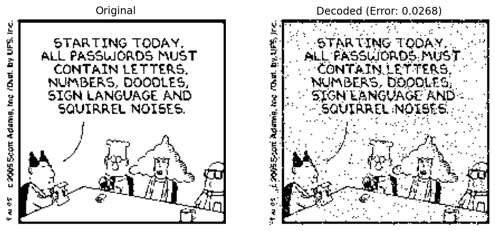
error_f_N(0.1, 5)0.008698038139662505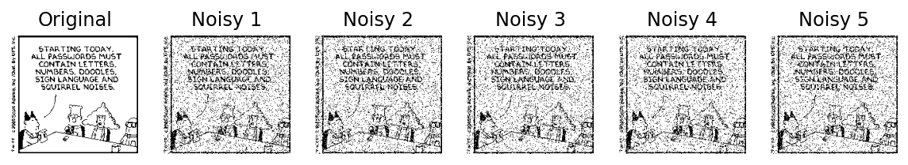
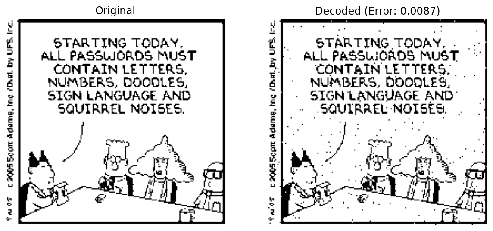
error_f_N(0.1, 10)0.0012621758814652215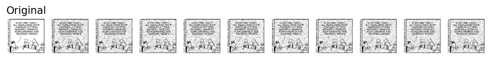
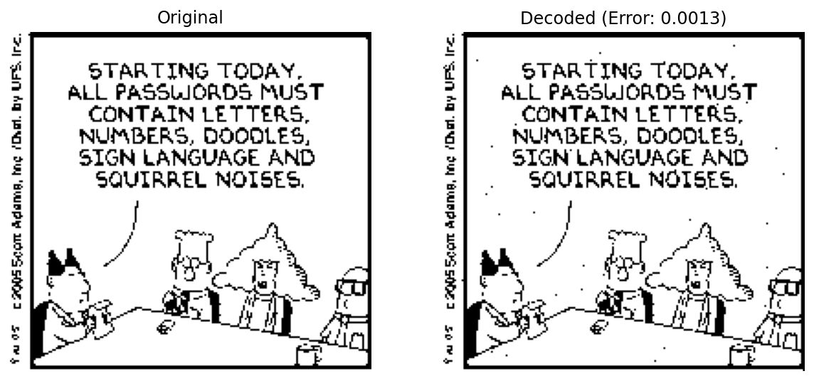
error_f_N(0.4, 10)0.3344491699821649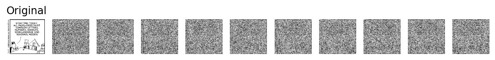
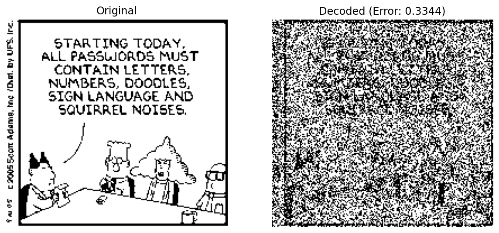
error_f_N(0.4, 12)0.3031691590067225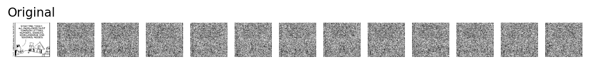
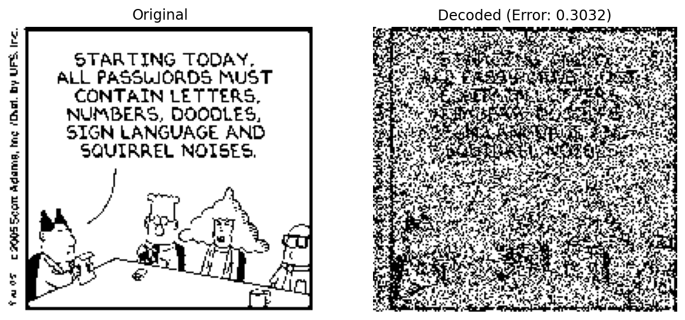
error_f_N(0.4, 100)0.025792289751680613
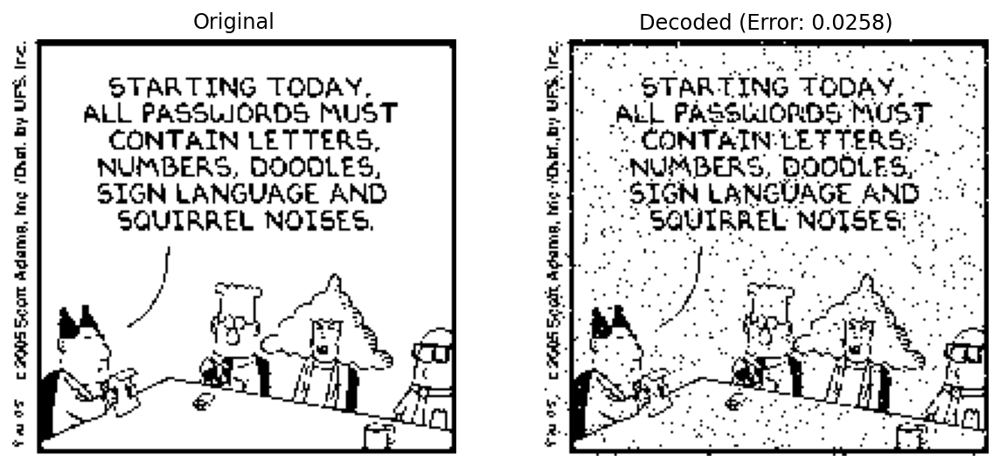